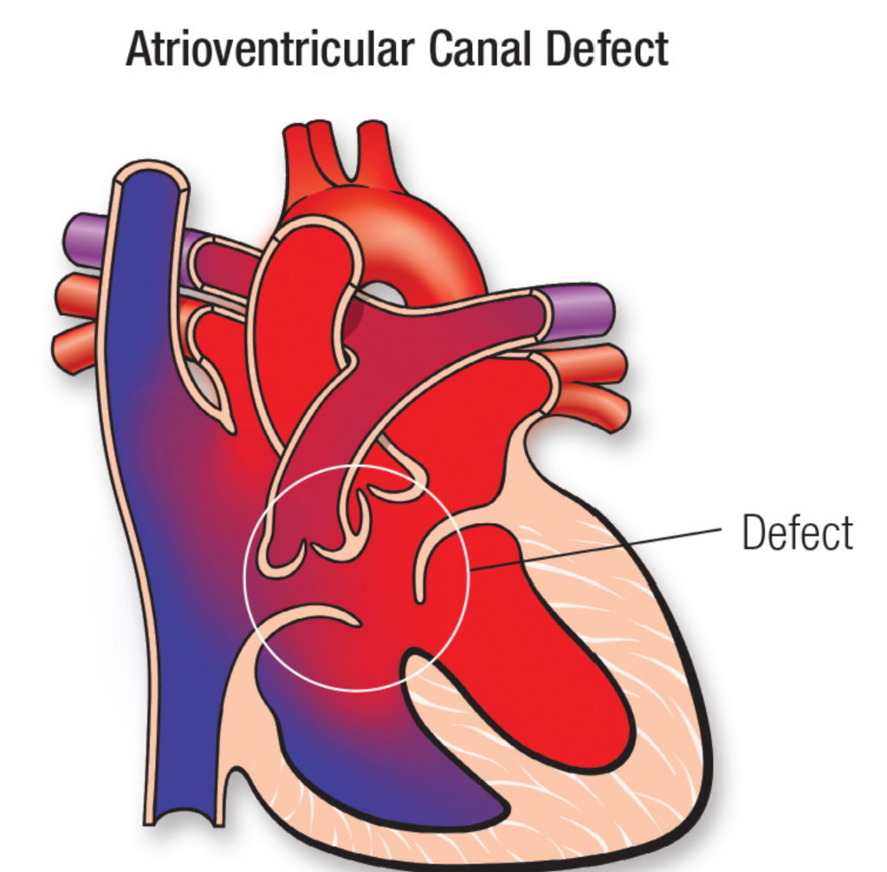

Fetal AVSD with Tetralogy of Fallot Physiology
A reassuring, evidence-based guide to help parents navigate diagnosis, fetal stability, genetics, and the pathway of surgical repair.
Navigating this Journey Together
Our goal is to **clarify your baby's diagnosis**, explain why they are stable right now, outline prenatal monitoring, and establish a clear **surgical roadmap** for a healthy future.
Complete Atrioventricular Septal Defect
In a typical heart, the left and right sides are separated by walls (septa), with two separate valves controling flow.
An AVSD (Atrioventricular Septal Defect) means there is a **large single opening (hole)** in the center of the heart and a **single common valve** instead of two separate ones.

Tetralogy of Fallot & Valve Narrowing
The second component is Tetralogy of Fallot (TOF) physiology.
This means the pathway leading from the heart to the lungs is **narrowed (pulmonary valve stenosis)**. Because of this restriction, blood has to squeeze through a smaller opening to reach the lungs.
A Natural, Protective Balance
Normally, a large hole in the center of the heart (AVSD) causes too much blood to flood the baby's lungs.
However, the **narrow pulmonary valve acts as a shield**, restricting this extra flow. This surprising balance **protects the baby's lungs** from overcirculation and fluid build-up during pregnancy.
Safe and Stable in the Womb
The placenta performs all "breathing" and oxygenation for your baby during pregnancy, meaning the heart does not have to work hard to feed the lungs yet.
Because the **common valve does not leak (no significant regurgitation)**, your baby is at **very low risk for heart failure** or fluid build-up (hydrops) before birth.
Understanding the Chromosomal Link
Congenital heart disease is present in approximately 50% of patients with Down syndrome.
Specifically, an **AVSD carries a very strong association with Trisomy 21 (Down syndrome)**. Identifying this early helps our team coordinate dedicated neonatal and developmental care.
TOF
Syndrome
Diagnostic Genetic Testing Options
While blood screenings (like cell-free DNA) are useful, a diagnostic **amniocentesis** is the gold standard for structural heart findings.
Amniocentesis analyzes the actual amniotic fluid to provide a **definitive chromosomal karyotype and microarray**, giving our team exact details to plan your baby's care.
Your Prenatal Monitoring Timeline
Frequent tracking ensures that if the narrowing changes or the valve develops leaks, we can adjust birth plans immediately.
Delivering at a Specialty Care Center
Because this is a complex heart condition, delivery should be planned at a **specialty care hospital (Level IV maternal facility)**.
This guarantees that an **on-site pediatric cardiothoracic surgery team** and a **Level III/IV Neonatal Intensive Care Unit (NICU)** are ready to evaluate your baby the moment they are born.
Your Baby's Surgical Timeline
Early correction allows the heart to grow normally, leading to **excellent long-term survival and active childhoods**.
Your Care Plan at a Glance
Questions to Ask Your MFM Specialist
Educational Information Only
This presentation is provided for **general educational purposes only** and does not constitute medical advice, diagnosis, or treatment.
Your personal health findings, laboratory outcomes, and fetal echocardiogram measurements determine your individual care plan. **Always consult your own Maternal-Fetal Medicine specialist** to make decisions about your pregnancy.
Protecting Your Health Information
All case studies, documentation templates, and clinical examples published on OpenMFM are **fully anonymized**.
No protected health information (PHI) is collected or stored. Your clinical discussions, genetic tests, and care timelines are confidential and **strictly protected by HIPAA regulations**.
Professional Guidance & Resources
We Are with You Every Step
A complex diagnosis is a roadmap, not a destination. With prenatal monitoring and a dedicated heart team, we are ready to guide your family toward a bright, active future.